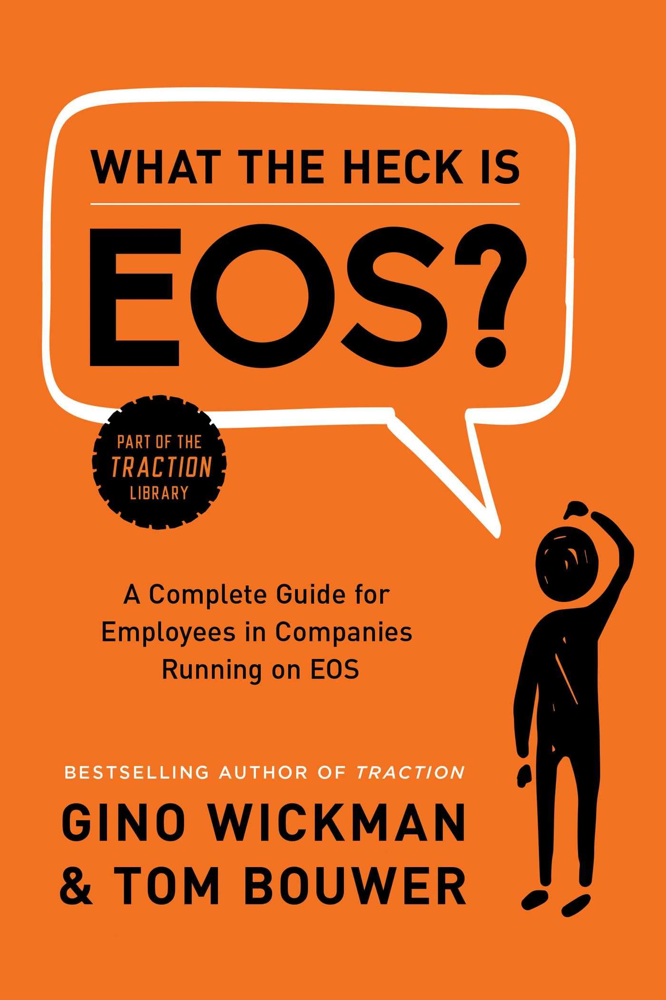

When a company adopts EOS, the leadership team usually does the learning: they read Traction, work with an Implementer and attend the planning sessions. Everyone else gets new meetings, new vocabulary and a few new documents. This book is aimed at that second group. It explains the pieces of EOS you are likely to bump into at work (the Vision/Traction Organizer, the Accountability Chart, Rocks, the weekly meeting, the Scorecard and the People Analyzer) in everyday language.
Its structure follows an employee's likely questions: What is this? How does it work? What is the company trying to do? Who is doing what? What matters most right now? Why all the meetings? What is my number? How am I doing? What do I do next? Three appendices then give you a role summary, questions to ask your manager and a glossary of EOS terms.
It is also, openly, part of the EOS ecosystem. The authors work in EOS and the book is part of the Traction Library, so read it as an explainer and a sales-neutral onboarding aid rather than an independent assessment of whether EOS works.
Sets out who the book is for (employees in EOS companies) and why it exists: leaders get trained on EOS, staff often do not. Expect the authors to explain how to use the book and to introduce themselves.
The definition chapter. EOS (the Entrepreneurial Operating System) is a set of simple concepts and tools that a leadership team uses to run a company. The chapter explains the problems it is meant to address (unclear direction, muddled roles, endless meetings, recurring problems) and why your company chose to adopt it.
The framing for an employee: this is the way the company now plans, meets and holds people accountable, so it is worth understanding rather than just tolerating.
Introduces the EOS Model and the Six Key Components: Vision, People, Data, Issues, Process and Traction. The idea is that a business is healthy when all six are strong, and that weakness in one tends to drag on the others.
For a new reader this is the map. Each later chapter zooms in on a tool that belongs to one of the components. The Six Components tab on this page breaks the model down further.
Explains the V/TO, the two-page summary of where the company is going and how it will get there. It covers the company's core values, core focus (purpose and niche), the 10-year target, the marketing strategy, the 3-year picture, the 1-year plan, the quarterly Rocks and the issues list.
The "do you see what they are saying" angle is about shared understanding: if leaders and staff describe the company in the same way, decisions at every level get easier.
Covers the Accountability Chart, which replaces or supplements the traditional org chart. Rather than listing names and reporting lines, it defines seats, each with a short list of roles (the things that seat is accountable for) and one person in it.
For an employee this answers two questions: what exactly is expected of me, and who owns the thing I need help with? It also explains why roles sometimes get moved around when a chart is first drawn.
Explains Rocks: the three to seven most important priorities for a quarter, set at company, team and individual level. A good Rock is specific, has a clear owner and can be finished in 90 days. Rocks are different from day-to-day work: they are the extra things that move the company forward.
Expect guidance on how to tell a Rock from a task, how to say "done" in a way anyone can check, and how Rocks are reviewed each week.
Explains the Meeting Pulse, the rhythm of structured meetings that runs the company, centred on the weekly Level 10 Meeting. The Level 10 has a fixed 90-minute agenda (segue, scorecard, Rock review, headlines, to-dos, issues, conclude), starts and ends on time, and spends most of its time on solving issues.
The argument is that a rigid structure is what stops meetings from drifting, and that the weekly rhythm keeps priorities visible. Quarterly and annual sessions sit above it for leaders.
Introduces the Scorecard: a single weekly page of a handful of numbers (commonly 5 to 15) that tell leaders whether the company is on track. Each number has an owner and a goal. A "measurable" is one of those numbers and is typically an activity you can influence rather than a lagging result.
The employee angle: a number that is yours and visible each week removes guesswork about performance. An off-track number is meant to prompt an issue and a conversation, not a verdict.
Covers the People Analyzer, a simple tool for reviewing how someone is doing. It rates a person against each of the company's core values (typically plus, plus-minus or minus) and then asks the GWC question for their seat: do they Get it, Want it and have the Capacity to do it?
It is also where the "right people in the right seats" idea is made personal. Because it is built around agreed values and clear roles, the aim is a specific, less subjective review conversation.
Wraps up with practical next steps for the reader. From the title and the appendices that follow, expect a push to engage rather than watch: learn your seat, know your number, bring issues to the meeting and use the questions in Appendix B with your manager.
A short reference on what the book asks of an employee. I have not been able to see the contents, so treat the one-line description as inferred from the title.
A list of questions to take to your manager so you can pin down your seat, your number, your Rocks and your standing. The Toolkit tab has my own version of such questions; it is not copied from the book.
A glossary of EOS vocabulary. The listing also shows a trademarked-terms page from EOS Worldwide at the back, a reminder that many of these terms are proprietary.
The EOS Model says a healthy business strengthens six things. Below, each is broken down: what it is, the tools that belong to it, what it means if you are not on the leadership team, and how it goes wrong. Then a side-by-side table and two interactive pieces.
Everyone sees and says the same thing about where the company is going
Right people (values fit) in the right seats (GWC)
A weekly Scorecard of numbers that show whether things are on track
Problems are named, discussed and solved for good (IDS)
The way the company does things is documented and Followed By All
Rocks and the Meeting Pulse turn plans into weekly action
The company answers a set of questions about who it is, where it is going and how it will get there, and writes the answers on the Vision/Traction Organizer. The aim is that a new hire and the CEO would describe the company in much the same way.
The V/TO is created by leaders and never shared, or the values are posters rather than behaviours. Staff then hear the vocabulary but not the substance.
"Right people" means someone shares the company's core values. "Right seat" means they Get it, Want it and have the Capacity to do it (GWC) for the seat they hold. The Accountability Chart defines the seats, and the People Analyzer is used to review people against the values and GWC.
Seats are drawn around friendships, or "no" on GWC is treated as a personal failing. The framework only helps if leaders are willing to move people, and to act when someone does not fit the values.
The Scorecard is a one-page weekly report of a few numbers, each with an owner and a goal. The book calls an individual number a measurable. The point is to spot trouble early and to let each person know whether they are on track.
The number is something you cannot control, is gamed, or is used as a stick. A measurable that does not reflect the real work should be raised and changed, not quietly ignored.
Problems and opportunities go on an issues list, and the team works through them with IDS: Identify the real issue, Discuss it, Solve it with a clear action and owner. Most of the weekly meeting is given to this.
The list fills with safe, small items while the real ones stay unspoken, or the discussion drifts and nothing is solved. Whether issues about leadership itself get airtime is a test of the whole system.
The company names its core processes and documents each as a short set of steps. The goal is that they are Followed By All (FBA), so customers get consistent results and new people can learn quickly.
The documents are written once and ignored, or they are so long that nobody reads them. Process is also the component the book covers least directly, since it has no chapter of its own in the contents listing.
Two main tools: Rocks (90-day priorities) and the Meeting Pulse (a fixed rhythm of meetings). The Level 10 Meeting happens weekly and keeps Rocks, numbers and issues in front of the team.
Rocks become a long list of everything, meetings start late, or leaders skip the rhythm. Traction relies on the people at the top following their own rules.
| Question it answers | Main tools | Your touchpoint | Warning sign | |
|---|---|---|---|---|
| Vision | Where are we going? | V/TO | Read it, know the values | You cannot describe the company in a sentence |
| People | Are we the right team in the right seats? | Accountability Chart, People Analyzer, GWC | Your seat and its roles | Unclear who owns what |
| Data | Are we on track this week? | Scorecard, measurables | Your number | Numbers nobody can influence |
| Issues | What is in the way? | Issues list, IDS | Raising and solving issues | The same problem returns every quarter |
| Process | How do we do it, every time? | Core processes, FBA | Following and improving steps | Four people give four different answers |
| Traction | Are we getting it done? | Rocks, Level 10, quarterly sessions | Your Rocks, weekly meeting | Priorities change every week |
The six are meant to be read as a system: Vision sets direction, People and Process make it possible, Data shows progress, Issues clears obstacles, and Traction keeps it moving.
A reflection sketch of my own, not a diagnostic from the book. Slide each bar to how strong that component feels where you work.
Six workplace moments, all invented by me as illustrations. Tap the component each one points to.
The tools the book walks through, described from my reading of its structure. The questions and the practice plan are my own suggestions, not material from the book.
The two-page summary of the company's vision and plan.
Shows the seats in the company, each with defined roles and one name.
Review someone against each core value and then ask Get it, Want it, Capacity to do it for their seat.
Weekly measurables with an owner and a goal.
Identify the root cause, Discuss, Solve with an action, an owner and a date.
Rocks are the few priorities for the quarter. The Level 10 is the weekly 90-minute meeting where they are reviewed.
EOS Model / Six Key Components.
V/TO.
Accountability Chart.
GWC.
Rocks.
Level 10 Meeting.
Scorecard and measurables.
IDS.
People Analyzer.
FBA.
Paraphrases of the book's main arguments, not direct quotes.
You are more useful when you know where the company is going.
A seat with written roles beats a vague job title.
A short list of priorities gets done; a long list does not.
A fixed agenda is what keeps a meeting useful.
Knowing your number tells you how you are doing before anyone else does.
| Category | Claude | Dan | Why Claude scored it that way |
|---|---|---|---|
| Ideas | 3.0 | 4.0 | A clear, well-organised explanation of EOS, but the ideas are the EOS tools from Traction restated, not new ones. |
| Readability | 4.0 | 4.0 | Plain language, questions as chapter titles and a tight structure make it quick to read, though readers call it dry in places. |
| Actionability | 3.5 | 3.0 | Gives an employee concrete things to find out and do (seat, number, Rocks, issues), but much depends on how well the company runs EOS. |
| Evidence | 2.0 | 2.0 | Largely explanation and endorsement from inside the EOS world. I found no independent evidence in what I read that EOS improves outcomes. |
| Category average | 3.13 | 3.25 | Claude's overall 3.1 is about 0.5 below the Goodreads 3.62. Many Goodreads raters are employees given the book at work and probably judge it on usefulness as an orientation guide, where I give it more credit than on originality or evidence. Dan's overall of 4.0 sits 0.75 above his own category average of 3.25. The biggest gap between Dan and Claude is Ideas (4.0 vs 3.0); he scores Actionability lower than Claude (3.0 vs 3.5) and matches it on Evidence (2.0). |
Categories are the same four used for every review: Ideas, Readability, Actionability, Evidence.
Goodreads (What the Heck Is EOS?: A Complete Guide for Employees in Companies Running on EOS, all editions combined): average 3.62, 4,575 ratings, 528 reviews, read from the Goodreads work page on 11 Nov 2026, so the sample is large enough to be meaningful. The star-by-star distribution was not shown on that page and the main book page returned no content, so the split is not available. Search snippets from earlier the same day quoted 3.64 from 4,181 ratings, a slightly older snapshot of the same listing.
What you may have missed: the book comes from inside the system it explains. Wickman founded EOS and Bouwer is described as a Certified EOS Implementer, so it reads as an explanation and an endorsement, not an independent test. The earlier version of this page said Bouwer was an ordinary employee; I could not support that and have corrected it.
Critics of EOS in general (as summarised by Shortform) say it does not suit every business, takes significant time and effort, can take around two years to embed and can feel rigid. These points are about EOS rather than this book, but they matter because the book's promise only holds if leaders run the system well. I have not seen independent studies of EOS outcomes.
Dan rates What the Heck Is EOS? 4 out of 5. It builds on the EOS method and on the Process and Traction books, and his company is trying to implement it so that everyone is accountable and knows what they are moving towards. He really likes the ideas (4): done well, it can be a quick and good way to see where the company is moving and make sure everybody is pointing the right way.
It is a quick, easy read with easy concepts (readability 4). He finds it has lots of actionable items, almost too many, so it is easy to get lost in the amount, even though the book tries to counter that by saying things take longer than you would expect (actionability 3).
His main reservation is that it sells many of the ideas as easier than they are, and doesn't fully grasp the magnitude of the shift in thinking involved. People get lost in the day-to-day and don't follow through, especially after doing things one way for so long. On evidence he scored it a 2: it is a person's opinion on how to run a company, not 100% science-backed. His summary: great concepts and good ideas, and the kind of book where you take as much of it as you can.
Written up from Dan's own words (11 Nov 2026); the last sentence of what he sent was cut off, so it is not reproduced. His view stands apart from the Claude and reader views above.
A system that asks people to take part works better when they understand it. For an employee the practical version is small: know your seat, know your number, know this quarter's priorities and use the issues list. The book is a guide to finding those four answers.
What the Heck Is EOS? is a short, plainly organised introduction for employees in EOS companies. Its value is orientation: it turns jargon into questions you can take to your manager. Its limits are depth, independence and evidence.
Read it as an onboarding aid from inside the system, and pair it with your own judgment about how well your company runs EOS. Dan's rating is still to come.